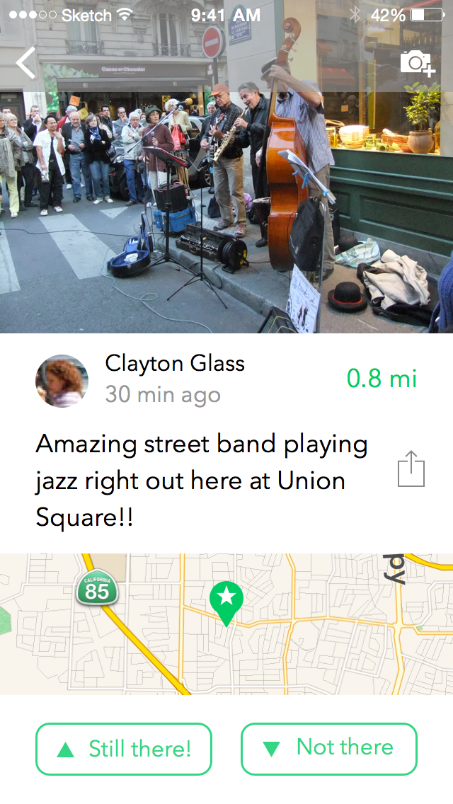
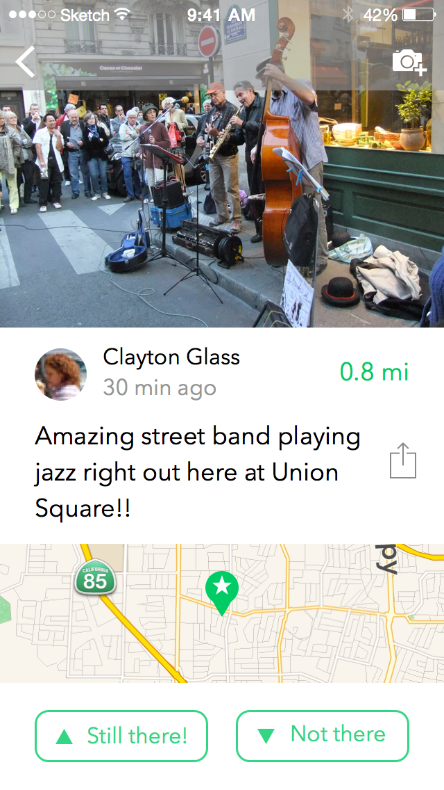

RADIUS
Radius is an iOS app that keeps you from missing out on what’s going on around you.
My friend, Matt Piccolella, and I began working on this project last semester to help us learn the processes of designing and developing an app, as neither of us had any experience with creating native apps for the app store.
Last summer, we lived in SoHo, which allowed us to take advantage of unplanned activities and events. With our appreciation for spontaneity and surprise, though, sometimes came feelings of fomo and frustration.
From that frustration, Radius was born as a way to discover and share spontaneous and little publicized events. (It was originally called Around, but that was an even worse name than Radius.)

IDEATION
It felt important that Radius be a map-centric app, as part of our frustration had come from an issue with news feeds. It’s likely that many of the things we imagine being posted on Radius would otherwise be posted on social networks like Facebook and Twitter, but there’s a good chance we’d never see them.
The average Facebook user has more than 300 friends, and the average Twitter user follows more than 100 others. It’s often difficult to cut through the noise, this almost inevitably results in me scrolling past things I wish I hadn’t.
In addition, Facebook and Twitter offer the ability to share locations, but only in terms of a city or certain establishment. Using markers on a map would allow us to show exact locations, as well as transfer users to a maps app for directions.

USERFLOW
Mapping out the userflow allowed us to think more clearly about what functionality was essential to the app and figure out what features seemed excessive. In the early sketching, we included everything we thought would be necessary to create a new social network, but there was little need for all of it.
The first thing we cut was the ability to have friends. For our purposes, a user's profile only really served to attribute posts to someone like a user review platform, avoiding the headaches that come with anonymous posting. Otherwise, the identity of posters would ideally be irrelevant to users.
Without friends, providing full public user profiles also seemed unnecessary. We wanted to include a gamified point system, as well as offer users the ability to look through their own post history, but it didn't seem important to have that visible to others.


UI DECISIONS
After hammering out what actually needed to included in the app, we were able to put togehter wireframes that reflected a UI we felt was intuitive and uncluttered. Given that we only had a few pages that needed to be accessible from the "main menu," we were able to get rid of the tab bar. The icons for accessing the stream view and the profile/settings page were moved to the navigation bar.
Although that placement made it slightly more difficult to access the buttons, we felt comfortable with it as they were not intended to be accessed often. On the other hand, we wanted to encourage all users to contribute, so the button for adding a new post was placed near the bottom for easy access.
An item we went back and forth on a lot was the range slider control on the bottom of the map and stream view pages. Initially, it seemed like it would simplify the process by allowing users to just choose a distance from their current location within which to explore. Yet, that would require the app to lock the user's to their current location. Also, the screen is rectangular, so it would be unclear what the distance referred to. Instaed, we decided to let users move and zoom around using the familiar intuitive gesture controls.
We included a stream view, as well, since some users might prefer a news feed, and it would also help with certain issues, such as a high concentration of map markers in a small area. Switching to the stream view would display list of the posts currently visible in the user's map view.


UX DECISIONS
Creating a good experience for the process of adding a new post was the most difficult thing to do. The first mockup shows everything we initially thought would be included, and, even after we had decided to get rid of friends, we had too much going on.
It wasn't until we actually built and used the app that we realized how annoying it was to have to dismiss the keyboard before posting. A "Done" or "Post" button would have to be added to either the navigation bar or somewhere else above the keyboard area.
We also thought sharing on other social networks needed to be emphasized early on, but it wasn't necessary to have the buttons so prominent. When a user added a post, they would be taken to the post page, where they could easily choose to share.
We also thought sharing on other social networks needed to be emphasized early on, but it wasn't necessary to have the buttons so prominent. When a user added a post, they would be taken to the post page, where they could easily choose to share.
When thinking about edge cases, we realized there would be an issue with displaying posts that didn't have photos attached. Given that the intent was to share something currently happening, it seemed reasonable to require a photo. Something we're still considering is allowing multiple photos, especially for other users to add photos when they an already posted event.
The tricky part of the process remains choosing an expiration time for the post. Given the variety of posts we expect, ranging from all-day sales to street performances, it wouldn't be appropriate to set an arbitrary time limit like an "ephemeral app." Our solution was to ask the user to categorize their post (which also helps with filtering) and autogenerate a time which can be adjusted if necessary.

EXPLORATION & ITERATION
For nearly every screen in the app, we created mocks with different color arrangements and styles before selecting that which felt most natural. Here you can see some of the decisions we made as tried to maintain consistency throughout the app.
Early on we had much more green throughout the app, but we decided it would be easier to read with white in general. The green is used only for highlights and the navigation bars of the three main pages (map, stream, & profile).
 

Both for the map preview and the stream view, we thought about showing the attached pictures. We decided against it, as scroll/search velocity would be compromised, and we expect users to click through based on the text descriptions.